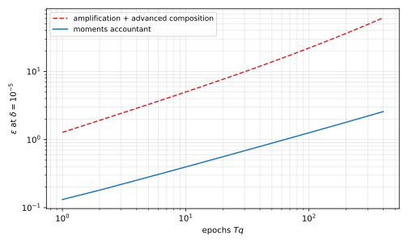

14 Private Deep Learning
The private stochastic gradient descent (SGD) of the previous chapter needs a convex, Lipschitz loss, and its privacy analysis loses large constants. The losses of neural networks are neither convex nor Lipschitz, and in practice the constants decide whether a guarantee is meaningful. This chapter adapts noisy SGD to neural networks under differential privacy (DP) by clipping each gradient. Then it replaces composition with a tighter accounting, built on the moments of the privacy loss. Last, it turns any non-private learner into a private one by a vote among models trained on disjoint data.
14.1 Neural networks
The setting is that of the previous chapter. Each record is a pair of a feature vector and a label, and training minimizes the total loss of the records over a parameter vector \(\theta\),
\[ \mathcal L(\theta; D) = \sum_{i=1}^n \ell(\theta; x_i, y_i). \tag{14.1}\]
Here a feature vector \(x\) lies in \(\mathbb R^{m_0}\), and a label is one of \(K\) classes, \(y \in \{1, \dots, K\}\). A neural network maps a feature vector to one score per class, and training adjusts its parameters \(\theta\). The simplest network is a stack of layers, each a linear map followed by a fixed nonlinear function.
Definition 14.1 (Multilayer perceptron) A network with \(J\) layers sets \(v^{(0)} = x\) and, for \(j = 1, \dots, J\),
\[ v^{(j)} = \phi\big(W^{(j)}v^{(j-1)} + c^{(j)}\big), \tag{14.2}\]
where \(W^{(j)}\) is an \(m_j \times m_{j-1}\) matrix of weights, \(c^{(j)} \in \mathbb R^{m_j}\) is a vector of offsets, and the activation function \(\phi\colon \mathbb R \to \mathbb R\) is applied to each coordinate. The last layer has no activation and outputs \(o \in \mathbb R^K\), one score per class. The parameter vector \(\theta\) collects all weights and offsets.
Without the activation, the network is a composition of linear maps, and so a single linear map. Common activations are the rectified linear unit \(\phi(u) = \max(0, u)\), the usual choice without privacy, and the bounded \(\tanh(u) = (e^u - e^{-u})/(e^u + e^{-u})\).
The softmax function turns the scores into a probability vector over the classes, \(\hat y_k = e^{o_k}/\sum_{j=1}^K e^{o_j}\), which gives the confidence of the network in each class. The prediction is the class with the largest \(\hat y_k\). The loss is the cross-entropy, the negative log of the probability of the true class,
\[ \ell(\theta; x, y) = -\ln \hat y_y = -\sum_{k=1}^K \mathbf 1[k = y]\,\ln \hat y_k , \tag{14.3}\]
where \(\hat y\) depends on \(\theta\) through every layer. The analysis of the previous chapter does not apply to this loss. It is not convex in \(\theta\), so no convergence theorem holds, although SGD works well in practice. It is not Lipschitz either, because in a two-layer network the second-layer weights multiply the gradient of the first-layer weights, and they can be arbitrarily large. So a single gradient has unbounded sensitivity.
14.2 Differentially private SGD
Two changes make noisy SGD practical. First, each gradient is clipped to a fixed norm, which bounds sensitivity directly. Clipping shrinks a vector that is too long and leaves a short one alone. Second, each step uses a random batch of records, called a lot, chosen by Poisson sampling.
Definition 14.2 (Clipping) For a clipping norm \(C\), a positive number, the clipping of a vector \(g\) is
\[ \mathrm{clip}_C(g) = g\cdot\min\left(1, \frac{C}{\|g\|_2}\right). \tag{14.4}\]
So every clipped vector has norm at most \(C\).
DP-SGD combines the two changes. Each step clips the gradient of every record in the lot, adds Gaussian noise to the sum, and divides by the expected lot size \(qn\). The noise multiplier \(\sigma\) sets the noise, as the ratio of its standard deviation to the clipping norm. So, unlike the \(\sigma\) of the previous chapter, it is not the standard deviation itself.
Definition 14.3 (DP-SGD) Let the parameter vector \(\theta\) have \(d\) coordinates. Fix a sampling rate \(q\) in \((0, 1]\), a noise multiplier \(\sigma > 0\), a clipping norm \(C\), a number of steps \(T\), learning rates \(\eta_t\) and a start \(\theta_0\). For \(t = 1, \dots, T\):
- Form the lot \(B_t\) by including each index \(i \in \{1,\dots,n\}\) independently with probability \(q\).
- Compute the noisy average of clipped gradients, \[ \tilde g_t = \frac{1}{qn}\left(\sum_{i\in B_t}\mathrm{clip}_C\big(\nabla\ell(\theta_{t-1}; z_i)\big) + b_t\right), \qquad b_t \sim \mathcal N(0, \sigma^2C^2 I_d). \tag{14.5}\]
- Step: \(\theta_t = \theta_{t-1} - \eta_t\,\tilde g_t\).
Output \(\theta_T\).
Unlike the private SGD of the previous chapter, a step uses a lot of expected size \(qn\) instead of one record. And clipping, not an assumption, bounds the gradient. The noise is calibrated to \(C\), the most that one record can contribute to the sum.
Lemma 14.1 Adding or removing one record changes the clipped sum \(\sum_{i\in B}\mathrm{clip}_C(\nabla\ell(\theta; z_i))\) by a vector of norm at most \(C\). Replacing one record changes it by at most \(2C\).
Proof. Adding or removing a record adds or removes one clipped vector, of norm at most \(C\). A replacement does both, and the triangle inequality gives \(2C\).
Clipping has a cost, because the clipped average is a biased estimate of the gradient. So even for convex losses the convergence theorem no longer applies, but clipped SGD works well in practice.
The privacy analysis depends on how the lot is drawn. Poisson sampling includes each record independently with probability \(q\), so the lot size is random. Even at \(q = 1/n\), this is not the same as the choice of one record, because the lot may be empty or hold several records. Other schemes, such as sampling without replacement of a lot of fixed size, need other analyses. The analyses below are for Poisson sampling. They use the add/remove relation, under which neighbours \(D \sim D'\) differ by one record, so Lemma 14.1 gives sensitivity \(C\).
Implementations often shuffle the data once and cut it into consecutive batches of fixed size. Each batch is then a uniform sample, but the batches are dependent, so the Poisson analysis does not apply to them.
14.3 Privacy accounting
The analysis of the previous chapter applies to DP-SGD too, because without sampling a single step is the Gaussian mechanism with noise multiplier \(\sigma\). If that step is \((\varepsilon_0, \delta_0)\)-DP, then amplification by Poisson sampling makes it about \((2q\varepsilon_0, q\delta_0)\)-DP, and advanced composition over \(T\) steps gives
\[ \Big(O\big(q\varepsilon_0\sqrt{T\ln(1/\delta)}\big),\ Tq\delta_0 + \delta\Big)\text{-DP}. \tag{14.6}\]
Abadi and coauthors proved a better bound for the same algorithm, which needs less noise for the same guarantee.
Theorem 14.1 (Moments accountant, asymptotic form) There are constants \(c_1\) and \(c_2\) such that, for every sampling rate \(q\) and number of steps \(T\), every \(\varepsilon < c_1q^2T\) and every \(\delta > 0\), DP-SGD is \((\varepsilon, \delta)\)-DP under add/remove neighbours if
\[ \sigma \ge c_2\,\frac{q\sqrt{T\ln(1/\delta)}}{\varepsilon}. \tag{14.7}\]
The proof is Theorem 1 of Abadi and coauthors, 2016, and the rest of this section proves its ingredients. Compared with composition, the gain is a factor of order \(\sqrt{\ln(1/\delta_0)}\) in \(\sigma\) and no failure probability \(Tq\delta_0\), as Corollary 14.1 shows below. Such factors in \(\varepsilon\) separate a meaningful guarantee from an empty one.
The accountant starts from the privacy loss. For a mechanism \(M\) whose output has density \(p_D\) on dataset \(D\), the privacy loss at an output \(y\) is \(\ln\big(p_D(y)/p_{D'}(y)\big)\). It is a random variable when \(y\) is drawn from \(M(D)\). By the privacy loss criterion of the approximate DP chapter, \((\varepsilon,\delta)\)-DP follows if, for every ordered pair of neighbours, the loss exceeds \(\varepsilon\) with probability at most \(\delta\). But tail probabilities do not compose simply, and moments do, by addition. So the accountant takes, for an order \(\lambda > 0\), the logarithm of the average \(\lambda\)-th power of the ratio \(p_D(y)/p_{D'}(y)\), for the worst pair of neighbours.
Definition 14.4 (Log-moments of the privacy loss) Let \(p_D\) be the density of the output \(M(D)\). For \(\lambda > 0\), the \(\lambda\)-th log-moment of \(M\) is
\[ \kappa_M(\lambda) = \sup_{D \sim D'}\ \ln\ \mathbb E_{y\sim M(D)}\left[\left(\frac{p_D(y)}{p_{D'}(y)}\right)^{\lambda}\right]. \tag{14.8}\]
Up to a factor, it is the Rényi divergence of order \(\alpha = \lambda + 1\) between the two output distributions. A bound on it for every pair of neighbours is Rényi differential privacy (RDP). By Markov’s inequality, a bound on one log-moment already gives approximate DP.
Theorem 14.2 (From moments to approximate DP) For every \(\lambda > 0\) and \(\varepsilon \ge 0\), the mechanism \(M\) is \((\varepsilon, \delta)\)-DP with
\[ \delta = \exp\big(\kappa_M(\lambda) - \lambda\varepsilon\big). \tag{14.9}\]
Proof.
- Fix neighbours \(D \sim D'\) and write \(L = \ln(p_D(Y)/p_{D'}(Y))\) for the privacy loss random variable, with \(Y \sim M(D)\). The map \(u \mapsto e^{\lambda u}\) is increasing, so \(\Pr[L > \varepsilon] \le \Pr[e^{\lambda L} \ge e^{\lambda\varepsilon}]\).
- Markov’s inequality bounds the right side by \(\mathbb E[e^{\lambda L}]\,e^{-\lambda\varepsilon}\), and \(\mathbb E[e^{\lambda L}] \le e^{\kappa_M(\lambda)}\) by definition.
- So the privacy loss exceeds \(\varepsilon\) with probability at most \(\delta\), and the privacy loss criterion gives \((\varepsilon,\delta)\)-DP.
The conversion is useful because log-moments are easy to track over many steps. The next lemma shows that they add up when mechanisms run in sequence, even when the outputs of the previous mechanisms choose the next one.
Lemma 14.2 (Composition of moments) Let \(M_1\) have output \(y_1\), and let \(M_2(\cdot\,; y_1)\) be a mechanism chosen as a function of \(y_1\) with \(\kappa_{M_2(\cdot;y_1)}(\lambda) \le \kappa_2\) for every \(y_1\). The mechanism \(M\) that outputs \((y_1, y_2)\) satisfies \(\kappa_M(\lambda) \le \kappa_{M_1}(\lambda) + \kappa_2\). By induction, \(T\) adaptive steps have log-moments at most the sum of theirs.
Proof.
- The density of \((y_1, y_2)\) on \(D\) is \(p_D(y_1)\,p_D(y_2 \mid y_1)\), so the ratio for neighbours factors as \(r_1(y_1)\,r_2(y_2 \mid y_1)\). Here \(r_1\) is the density ratio of \(y_1\), and \(r_2\) is the density ratio of \(y_2\) given \(y_1\).
- The expectation over \(y_2\) first, given \(y_1\), gives \[ \mathbb E\big[r_1^\lambda r_2^\lambda\big] = \mathbb E_{y_1}\Big[r_1(y_1)^\lambda\ \mathbb E_{y_2}\big[r_2(y_2\mid y_1)^\lambda \,\big|\, y_1\big]\Big] \le e^{\kappa_2}\,\mathbb E_{y_1}\big[r_1(y_1)^\lambda\big] \le e^{\kappa_2 + \kappa_{M_1}(\lambda)}. \tag{14.10}\]
- The logarithm and the supremum over neighbours give the claim.
For the Gaussian mechanism the log-moments have a closed form.
Lemma 14.3 Let \(M(D) = f(D) + b\) with \(b \sim \mathcal N(0, \sigma^2 I_d)\), where \(f\) has \(\ell_2\) sensitivity \(\Delta_2 f\). Then for every \(\lambda > 0\),
\[ \kappa_M(\lambda) = \frac{\lambda(\lambda + 1)(\Delta_2 f)^2}{2\sigma^2}. \tag{14.11}\]
Proof.
- Fix neighbours, write \(\mu = f(D)\) and \(\mu' = f(D')\), and let \(r = \|\mu - \mu'\|_2 \le \Delta_2 f\). For \(y = \mu + \sigma \xi\) with \(\xi\) standard normal, the privacy loss is \[ \frac{\|y - \mu'\|^2 - \|y - \mu\|^2}{2\sigma^2} = \frac{r^2}{2\sigma^2} + \frac{\langle \xi, \mu - \mu'\rangle}{\sigma}. \tag{14.12}\]
- So the privacy loss is normal with mean \(m = r^2/(2\sigma^2)\) and variance \(r^2/\sigma^2 = 2m\).
- A normal variable \(Z\) with mean \(m\) and variance \(s^2\) has \(\mathbb E[e^{\lambda Z}] = e^{\lambda m + \lambda^2s^2/2}\). Here the exponent is \(\lambda m + \lambda^2 m = \lambda(\lambda+1)r^2/(2\sigma^2)\).
- This increases with \(r\), and the supremum is reached at \(r = \Delta_2 f\).
The three results give a guarantee for many Gaussian steps without sampling. The log-moments of the steps add up, and the conversion turns their sum into \((\varepsilon,\delta)\)-DP at the best order \(\lambda\).
Corollary 14.1 Let \(\rho = (\Delta_2 f)^2/(2\sigma^2)\). Any adaptive sequence of \(T\) Gaussian mechanisms, each with sensitivity \(\Delta_2 f\) and noise \(\mathcal N(0,\sigma^2I_d)\), is \((\varepsilon,\delta)\)-DP for every \(\delta \in (0,1)\), with
\[ \varepsilon = T\rho + 2\sqrt{T\rho\ln(1/\delta)}. \tag{14.13}\]
Proof.
- By Lemma 14.3 and Lemma 14.2, the sequence has \(\kappa(\lambda) \le \lambda(\lambda+1)T\rho\).
- By Theorem 14.2, it is \((\varepsilon,\delta)\)-DP whenever \(\lambda(\lambda+1)T\rho - \lambda\varepsilon \le \ln\delta\), that is, whenever \(\varepsilon \ge (\lambda+1)T\rho + \ln(1/\delta)/\lambda\).
- The right side is smallest at \(\lambda = \sqrt{\ln(1/\delta)/(T\rho)}\), where it equals \(T\rho + 2\sqrt{T\rho\ln(1/\delta)}\).
For comparison, take the same \(T\) Gaussian steps with \(\Delta_2 f = 1\), so that \(T\rho = T/(2\sigma^2)\). Advanced composition first needs a guarantee per step. The Gaussian mechanism of the approximate DP chapter gives \(\varepsilon_0\) with \(\sigma = \sqrt{2\ln(1/\delta_0) + \varepsilon_0}/\varepsilon_0\), so \(\varepsilon_0\) is about \(\sqrt{2\ln(1/\delta_0)}/\sigma\). Then it gives \(\varepsilon \approx \varepsilon_0\sqrt{2T\ln(1/\delta)}\), which is \(2\sqrt{T\ln(1/\delta_0)\ln(1/\delta)}/\sigma\). The corollary gives \(\sqrt{2T\ln(1/\delta)}/\sigma\) plus a lower-order term. That is smaller by a factor of about \(\sqrt{2\ln(1/\delta_0)}\), with no failure probability \(T\delta_0\) to pay.
DP-SGD adds Poisson sampling to each step, and its log-moments come from a one-dimensional pair of distributions. By Lemma 14.1, after a division by \(C\), a step compares the noise distribution \(\mathcal N(0, \sigma^2)\) with the mixture \((1-q)\,\mathcal N(0, \sigma^2) + q\,\mathcal N(1, \sigma^2)\). In the mixture, the extra record is sampled with probability \(q\).
Theorem 14.3 (Log-moments of the sampled Gaussian) For every integer \(\lambda \ge 1\), one step of DP-SGD with sampling rate \(q\) and noise multiplier \(\sigma\) has, under add/remove neighbours,
\[ \kappa(\lambda) \le \ln A_{\lambda+1}, \qquad A_{a} = \sum_{k=0}^{a}\binom{a}{k}(1-q)^{a-k}q^k\exp\left(\frac{k^2 - k}{2\sigma^2}\right). \tag{14.14}\]
The proof is Section 3.3 of Mironov, Talwar and Zhang (2019). It expands the \(a\)-th power of the density ratio between the mixture and \(\mathcal N(0,\sigma^2)\) with the binomial theorem, which gives \(A_a\). Each term is then a Gaussian integral, \(\mathbb E[e^{k\xi/\sigma^2}] = e^{k^2/(2\sigma^2)}\) for \(\xi \sim \mathcal N(0,\sigma^2)\). The hard part of the proof is to show that this pair, in this order, is the worst case over all neighbours and over the reverse order. For \(\sigma \ge 1\), small \(q\) and moderate \(\lambda\), the bound is \(q^2\lambda(\lambda+1)/((1-q)\sigma^2) + O(q^3\lambda^3/\sigma^3)\), which gives Theorem 14.1.
These pieces together give the moments accountant. It computes the log-moment of one step for every \(\lambda\), multiplies by \(T\) by Lemma 14.2, and converts with Theorem 14.2 at the best \(\lambda\):
\[ \varepsilon(\delta) = \min_{\lambda \ge 1}\ \frac{T\ln A_{\lambda+1} + \ln(1/\delta)}{\lambda}. \tag{14.15}\]
The computation depends only on \(q\), \(\sigma\), \(T\) and \(\delta\), never on the data. So you can fix the privacy cost of a training run before you touch the data, and set the noise or the number of steps to meet a target. Figure 14.1 compares the accountant with the composition route on a typical setting.

Example 14.1 With \(q = 0.01\), \(\sigma = 4\) and \(\delta = 10^{-5}\), Figure 14.1 shows the two accountings of the same algorithm. After \(100\) epochs, or \(T = 10{,}000\) steps, the composition route certifies \(\varepsilon = 22.08\) and the moments accountant certifies \(\varepsilon = 1.26\). After \(400\) epochs the values are \(61.41\) and \(2.58\). The first is no guarantee at all, and the second is a reasonable one.
These analyses use add/remove neighbours, while this book uses replace-one. A replacement is a removal followed by an addition, so a guarantee for one relation converts to the other at the cost of about twice the \(\varepsilon\).
14.4 DP-SGD in practice
DP-SGD replaces SGD directly, but its behaviour differs in three ways.
Accuracy. On the handwritten-digit benchmark MNIST, a well-tuned DP-SGD reached \(98.1\%\) accuracy at \(\varepsilon = 2.93\) and \(\delta = 10^{-5}\), against about \(99.8\%\) without privacy (Papernot and coauthors, 2020). On the harder image benchmark CIFAR-10, it reached only \(66.2\%\) at \(\varepsilon = 7.53\), which is weak in both accuracy and privacy.
Architecture. Bounded activations such as \(\tanh\) work better than the rectified linear unit under DP-SGD, and the size of the network matters too. In each step, the noise vector \(b_t\) has expected squared norm \(d\sigma^2C^2\), while the sum of the gradients clipped to norm \(C\) has norm at most \(qnC\). So the ratio of signal to noise is at most about \(qn/(\sigma\sqrt d)\), which falls as the number of parameters \(d\) grows. So a network must be large enough to fit the task and no larger.
Hyperparameters. Each training run on the private data that tunes the learning rate, lot size, clipping norm or number of epochs spends privacy budget. Results that tune on the private data and do not count this cost overstate the privacy of the final model. Private selection picks the best of many private runs at a small constant factor in \(\varepsilon\) (Liu and Talwar). Public data helps too, for tuning or for pretraining a network whose last layers alone are then trained privately, which makes \(d\) smaller.
14.5 Private aggregation of teacher ensembles
DP-SGD changes the inside of one training algorithm. Private aggregation of teacher ensembles (PATE) instead treats the learner as a black box, so any improvement in non-private learning carries over. The price is a different model of the data. In addition to a sensitive labelled training set, PATE needs a supply of public unlabelled feature vectors.
PATE is an instance of sample and aggregate. It splits the data into disjoint parts, runs a non-private algorithm on each part, and combines the answers by a private aggregation. One record affects only one part, so the aggregation has low sensitivity. In PATE, the parts train \(m\) classifiers, the teachers, and the aggregation is a vote.
The simplest task is one private prediction for a public feature vector \(x\). Each teacher votes for a label, and \(c_k\) is the number of votes for label \(k\). The mode \(a\) is the label with the most votes, the smallest one in case of a tie. The gap \(\Gamma = c_a - \max_{k\ne a}c_k\) measures how far the vote is from a change of winner. The private mode releases the mode only when a noisy gap is above a threshold, because a large gap means that one changed record cannot change the winner.
Definition 14.5 (Private mode of the teachers) Let \(\varepsilon > 0\) and \(\delta \in (0, 1/2)\). Split the dataset into \(m\) fixed disjoint parts by position, train one teacher on each, and collect their votes on \(x\). Let \(a\) be the mode of the votes and \(\Gamma\) its gap, as above. Draw \(Z \sim \mathrm{Lap}(2/\varepsilon)\), Laplace noise with scale \(2/\varepsilon\). If
\[ \Gamma + Z > \tau, \qquad \tau = 2 + \frac{2}{\varepsilon}\ln\frac{1}{2\delta}, \tag{14.16}\]
output the mode \(a\). Otherwise output a symbol \(\bot\) for “no answer”, or a uniformly random label.
When the teachers agree, the mode is stable, and its exact release costs little privacy. This is the propose-test-release idea of the chapter on beyond global sensitivity. It tests privately that the data is far from a dataset with another answer, and if so, releases the answer without noise. The private mode is the stable mode of that chapter applied to the votes, with a lower threshold so that the failure probability is \(\delta\), not \(\delta/2\).
Theorem 14.4 The private mode is \((\varepsilon,\delta)\)-DP. The teachers’ training algorithm may be randomized, with coins independent of everything else.
Proof.
- Fix the teachers’ coins; a guarantee for every fixed choice of coins implies one for random coins. Neighbours differ in one record, which lies in one part, so at most one teacher’s vote changes. That moves one vote from one label to another, and changes each count by at most \(1\).
- The gap has sensitivity \(2\). If the mode stays the same, both terms of \(\Gamma\) change by at most \(1\). If the mode changes from \(a\) on \(D\) to \(a' \ne a\) on \(D'\), then \(c_{a'} + 1 \ge c'_{a'} \ge c'_a \ge c_a - 1\), so \(\Gamma \le c_a - c_{a'} \le 2\), and likewise \(\Gamma' \le 2\). In both cases \(|\Gamma - \Gamma'| \le 2\). So, by the Laplace mechanism, the indicator that the test passes is \(\varepsilon\)-DP.
- Same mode. The output is a function of the test indicator and of the common mode, so it is \(\varepsilon\)-DP by post-processing.
- Different modes. By step 2, \(\Gamma \le 2\). The test then passes on \(D\) with probability at most \(\Pr[Z > \tau - 2] = \tfrac12 e^{-\varepsilon(\tau-2)/2} = \delta\). Outside that event the output is \(\bot\), so for every set \(S\) of outputs, \[ \Pr[M(D)\in S] \le \Pr[M(D) = \bot]\,\mathbf 1[\bot\in S] + \delta \le e^\varepsilon\Pr[M(D') = \bot]\,\mathbf 1[\bot\in S] + \delta \le e^\varepsilon\Pr[M(D')\in S] + \delta, \tag{14.17}\] where the middle step is the \(\varepsilon\)-DP of the test from step 2. Replacing \(\bot\) by a random label is post-processing.
The accuracy depends on how good the teachers are. If the records are independent draws from a distribution, then teachers trained on disjoint parts vote independently on a fixed \(x\).
Proposition 14.1 Let \(\beta \in (0,1)\) be a failure probability, and let \(\tau\) be the threshold of Definition 14.5. Suppose each teacher, independently, votes for the correct label \(y\) of \(x\) with probability at least \(3/4\). If
\[ m \ge \max\left(4\tau + \frac8\varepsilon\ln\frac1\beta,\ 32\ln\frac2\beta\right), \tag{14.18}\]
then the private mode outputs \(y\) with probability at least \(1 - \beta\).
Proof.
- Let \(V\) be the number of correct votes. Its mean is at least \(3m/4\), and Hoeffding’s inequality for independent indicators gives \(\Pr[V \le 5m/8] \le e^{-2m(1/8)^2} = e^{-m/32} \le \beta/2\).
- If \(V > 5m/8\), then \(y\) has a majority, so it is the mode, and every other label has at most \(m - V\) votes. So \(\Gamma \ge 2V - m > m/4\).
- The test then fails with probability \(\Pr[Z \le \tau - \Gamma] \le \tfrac12 e^{-\varepsilon(m/4 - \tau)/2}\), because \(m/4 > \tau\). The first lower bound on \(m\) makes this at most \(\beta/2\).
- A union bound over the two failure events gives the claim.
Example 14.2 With \(\varepsilon = 1\), \(\delta = 10^{-5}\) and \(\beta = 0.01\), the threshold is \(\tau = 2 + 2\ln(50{,}000) = 23.64\). The two lower bounds are \(94.56 + 8\ln 100 = 131.4\) and \(32\ln 200 = 169.5\), so \(170\) teachers suffice. If a teacher needs \(n_0\) records to be right three times in four, the private prediction needs \(170\,n_0\).
The number of teachers grows like \(\ln(1/\delta)/\varepsilon\). This is the general price of sample and aggregate, about \(1/\varepsilon\) times more data than the non-private algorithm. That is often more than the best private algorithm for a specific task needs.
To answer \(k\) queries with \(k\) runs of the private mode costs about \(\varepsilon\sqrt{2k\ln(1/\delta')}\), by advanced composition. The sparse vector technique of the sparse vector chapter does better when most queries are stable, because it pays only for the queries whose answer is above a threshold. Here each query asks whether the gap on the next point is small. So the technique pays only for the unstable points, where it outputs a random label, and it answers the stable ones with the exact mode. Its privacy cost grows like the square root of the number of unstable queries, not of all \(k\) (Bassily, Thakkar and Thakurta).
The answers \((x_1,\hat y_1), \dots, (x_k,\hat y_k)\), with public features and private labels, form a labelled dataset that is safe to release. PATE trains a non-private learner, the student, on it. If the labelling is \((\varepsilon,\delta)\)-DP and the public features do not depend on the private data, the student is \((\varepsilon,\delta)\)-DP too, by post-processing. The student then answers any number of queries at no further cost. So PATE turns a bounded number of private predictions into a private model.
14.6 Summary
| Result | Statement |
|---|---|
| Lemma 14.1 | one record changes the clipped sum by at most \(C\), or \(2C\) under replacement |
| Theorem 14.1 | DP-SGD is \((\varepsilon,\delta)\)-DP with \(\sigma = O\big(q\sqrt{T\ln(1/\delta)}/\varepsilon\big)\) |
| Theorem 14.2 | a log-moment bound \(\kappa(\lambda)\) gives \((\varepsilon, e^{\kappa(\lambda)-\lambda\varepsilon})\)-DP |
| Lemma 14.2 | log-moments add up under adaptive composition |
| Lemma 14.3 | the Gaussian mechanism has \(\kappa(\lambda) = \lambda(\lambda+1)(\Delta_2 f)^2/(2\sigma^2)\) |
| Corollary 14.1 | \(T\) Gaussian steps give \(\varepsilon = T\rho + 2\sqrt{T\rho\ln(1/\delta)}\) |
| Theorem 14.3 | a sampled Gaussian step has \(\kappa(\lambda) \le \ln A_{\lambda+1}\) |
| Equation 14.15 | the moments accountant for \(T\) steps of DP-SGD |
| Theorem 14.4 | releasing the teachers’ mode when its noisy gap exceeds \(\tau\) is \((\varepsilon,\delta)\)-DP |
| Proposition 14.1 | \(O(\ln(1/\delta)/\varepsilon + \ln(1/\beta)/\varepsilon)\) accurate teachers suffice |
14.7 References
- Martín Abadi, Andy Chu, Ian Goodfellow, H. Brendan McMahan, Ilya Mironov, Kunal Talwar and Li Zhang, “Deep Learning with Differential Privacy”, 2016, which introduces DP-SGD with clipping and Poisson sampling, and the moments accountant.
- Ilya Mironov, “Rényi Differential Privacy”, 2017, the privacy notion built on the moments of the privacy loss, with its composition and conversion rules.
- Ilya Mironov, Kunal Talwar and Li Zhang, “Rényi Differential Privacy of the Sampled Gaussian Mechanism”, 2019, which proves Theorem 14.3.
- Borja Balle, Gilles Barthe and Marco Gaboardi, “Privacy Amplification by Subsampling: Tight Analyses via Couplings and Divergences”, 2018, the amplification by Poisson sampling of Figure 14.1.
- Nicolas Papernot, Abhradeep Thakurta, Shuang Song, Steve Chien and Úlfar Erlingsson, “Tempered Sigmoid Activations for Deep Learning with Differential Privacy”, 2020, on bounded activations and the accuracy figures quoted above.
- Jingcheng Liu and Kunal Talwar, “Private Selection from Private Candidates”, 2019, on hyperparameter selection at a constant factor in privacy.
- Kobbi Nissim, Sofya Raskhodnikova and Adam Smith, “Smooth Sensitivity and Sampling in Private Data Analysis”, 2007, which introduces sample and aggregate.
- Nicolas Papernot, Martín Abadi, Úlfar Erlingsson, Ian Goodfellow and Kunal Talwar, “Semi-Supervised Knowledge Transfer for Deep Learning from Private Training Data”, 2017, and Nicolas Papernot, Shuang Song, Ilya Mironov, Ananth Raghunathan, Kunal Talwar and Úlfar Erlingsson, “Scalable Private Learning with PATE”, 2018, the PATE framework and its refinements.
- Raef Bassily, Om Thakkar and Abhradeep Thakurta, “Model-Agnostic Private Learning”, 2018, the analysis of PATE with the sparse vector technique.
- Abhradeep Thakurta and Adam Smith, “Differentially Private Feature Selection via Stability Arguments, and the Robustness of the Lasso”, 2013, on the release of a stable answer, as in Theorem 14.4.